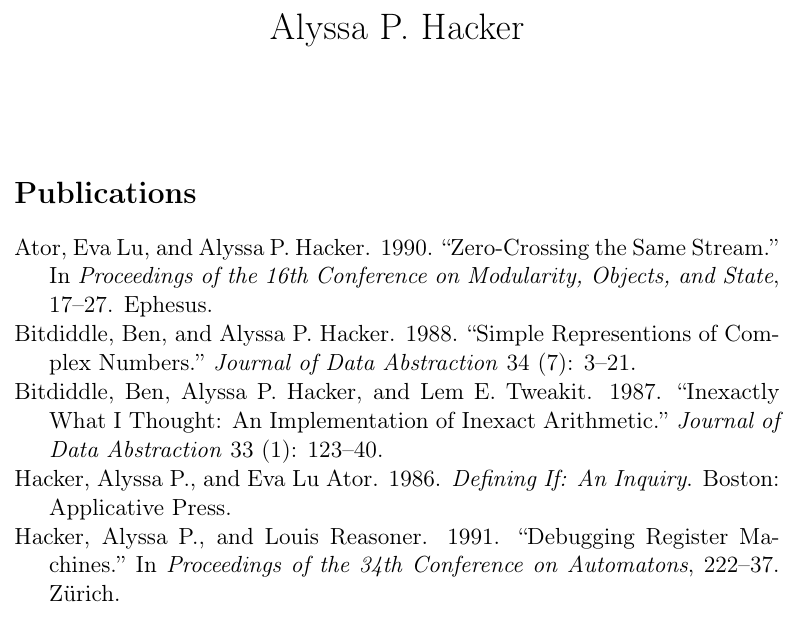
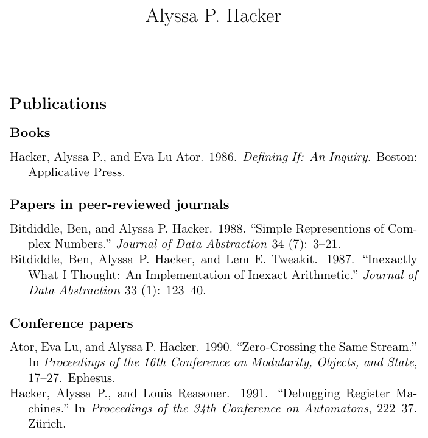
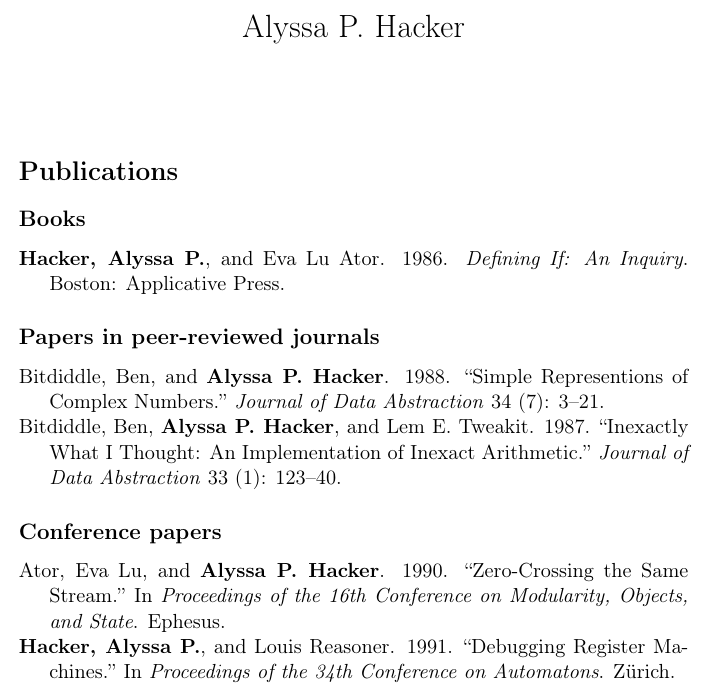

Version 0.1 for Org 9.6 and Citeproc-el 0.9.1 or later
Alyssa P. Hacker1 is working on her CV in Org mode. Excited about being able to explore the capabilities of Org-cite, the built-in citation framework,2 she starts with the bibliography section. Having already installed the Citeproc package and planning to export her CV in odt and html in addition to LaTeX pdf, Alyssa chooses the CSL exporter and, using cite/n to add entries to the bibliography without printed citations, writes the following document:
#+title: Alyssa P. Hacker
#+options: toc:nil num:nil author:nil date:nil
#+bibliography: alyssa.bib
#+cite_export: csl
[cite/n:@hacker86if;@bitdiddle87inexact;@bitdiddle88complex;@ator90zero;@hacker91register]
* Publications
#+print_bibliography:
A glance at the result of the pdf export:

suggests that she is on the right track, but Louis Reasoner, her assistant, has a look at the Org source and isn’t entirely satisfied. “I think alyssa.bib contains all of your publications and nothing else. At least in LaTeX, I would use an asterisk to cite everything in the file instead of listing all keys.” he says.
Alyssa changes the citation line to
[cite/n:@*]
and presses C-u C-c C-e to export again, but the result is disastrous: the Publications section of the exported document now contains a massive amount of books and papers by other authors in addition to her pieces. “You might need to bind the global bibliography to nil.” says Ben Bitdiddle, looking over Alyssa’s shoulder. After a bit of digging in the documentation and some experimentation,3 Alyssa settles on the following implementation of Louis’s suggestion:
# -*- org-export-allow-bind-keywords: t; -*-
#+bind: org-cite-global-bibliography nil
#+title: Alyssa P. Hacker
#+options: toc:nil num:nil author:nil date:nil
#+bibliography: alyssa.bib
#+cite_export: csl
[cite/n:@*]
* Publications
#+print_bibliography:
As she expected, the exported pdf is now identical to that produced from the first version.
Alyssa is so happy with her progress that she calls her friend Eva Lu Ator over to have a look. “Nice indeed!” says Eva. “But couldn’t you have separate sections according to publication type? It could be useful to emphasize the book.” After another round of documentation digging,4 Alyssa changes the part responsible for printing the bibliography to
* Publications
** Books
#+print_bibliography: :type book
** Papers in peer-reviewed journals
#+print_bibliography: :type article
** Conference papers
#+print_bibliography: :type inproceedings
exports the document again, and shows the result to Eva who is pretty pleased with the result:

By now, a small crowd has gathered around Alyssa’s desk, including Lem E. Tweakit, who remarks: “I like when CV bibliographies emphasize the author’s name, especially when most of the pieces are co-authored. I don’t know whether Org can do that, though.” “It should be doable with a Citeproc filter.”5 replies Alyssa, and after a while she produces the function
(defun tmp-make-alyssa-bold (rendered-name name _)
"Make RENDERED-NAME bold when NAME is Alyssa's.
Leave RENDERED-NAME unchanged otherwise. Return RENDERED-NAME."
(let ((given (cdr (assq 'given name)))
(family (cdr (assq 'family name))))
(when (and (string= given "Alyssa P.")
(string= family "Hacker"))
(push '(font-weight . "bold") (car rendered-name))))
rendered-name)which she adds to the Org file in a source code block and registers as a Citeproc name postprocessing filter with #+bind:
#+begin_src emacs-lisp :exports results :results none
(defun tmp-make-alyssa-bold (s name _)
"Make RENDERED-NAME bold when NAME is Alyssa's.
Leave RENDERED-NAME unchanged otherwise. Return RENDERED-NAME."
(let ((given (cdr (assq 'given name)))
(family (cdr (assq 'family name))))
(when (and (string= given "Alyssa P.")
(string= family "Hacker"))
(push '(font-weight . "bold") (car s)))
s))
#+end_src
#+bind: citeproc-name-postprocess-functions (tmp-make-alyssa-bold)
Alyssa reexports and looks at the result:

“The bibliography part is finished.” she declares. “Now I just have to write the rest of my CV… But there are Emacs packages for the missing sections too, right?”
The final form of Alyssa’s CV bibliography (also available as a standalone file):
#+title: Alyssa P. Hacker
#+options: toc:nil num:nil author:nil date:nil
#+bibliography: alyssa.bib
#+cite_export: csl
#+begin_src emacs-lisp :exports results :results none
(defun tmp-make-alyssa-bold (s name _)
"Make RENDERED-NAME bold when NAME is Alyssa's.
Leave RENDERED-NAME unchanged otherwise. Return RENDERED-NAME."
(let ((given (cdr (assq 'given name)))
(family (cdr (assq 'family name))))
(when (and (string= given "Alyssa P.")
(string= family "Hacker"))
(push '(font-weight . "bold") (car s)))
s))
#+end_src
#+bind: citeproc-name-postprocess-functions (tmp-make-alyssa-bold)
[cite/n:@*]
* Publications
** Books
#+print_bibliography: :type book
** Papers in peer-reviewed journals
#+print_bibliography: :type article
** Conference papers
#+print_bibliography: :type inproceedings
Alyssa’s BibTeX file, alyssa.bib, is available here.
Alyssa and all other characters in the text hail, of course, from the classic Structure and Interpretation of Computer Programs, 2nd ed. (Boston: The MIT Press, 1996) by Abelson and Sussman, which is now available under a Creative Commons Attribution-ShareAlike 4.0 International License at https://web.mit.edu/6.001/6.037/sicp.pdf.↩︎
In addition to the corresponding Org Manual chapter, see Kristoffer Balintona's Citations in org-mode: Org-cite and Citar and TEC’s TMIO post for good introductions to Org-cite.↩︎
See the Org Manual’s Export settings and Advanced Export Configuration sections on binding buffer-local variables during export. Note that this functionality requires the value of the org-export-allow-bind-keywords variable to be non-nil!↩︎
See the Manual’s Bibliography options in the “biblatex” and “csl” export processors section.↩︎
A very short description of Citeproc-el’s processing filters can be found in the Hooks section of the project’s README.↩︎